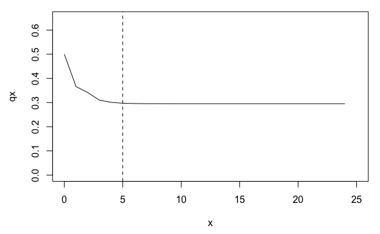

An R package for manipulating and analyzing matrix population models (MPMs). Includes functions for:
- deriving life history traits
- deriving life tables or life table components
- deriving vital rates
- perturbation analyses
- manipulating and transforming MPMs
Installation
Install from GitHub with:
# install.packages("remotes")
remotes::install_github("jonesor/Rage")Loading an example MPM
The functions in Rage work on MPMs (or components of MPMs), so we’ll start by loading one of the example MPMs included in the Rage package (mpm1).
library(Rage) # load Rage
data(mpm1) # load data object 'mpm1'
mpm1
#> $matU
#> seed small medium large dormant
#> seed 0.10 0.00 0.00 0.00 0.00
#> small 0.05 0.12 0.10 0.00 0.00
#> medium 0.00 0.35 0.12 0.23 0.12
#> large 0.00 0.03 0.28 0.52 0.10
#> dormant 0.00 0.00 0.16 0.11 0.17
#>
#> $matF
#> seed small medium large dormant
#> seed 0 0 17.9 45.6 0
#> small 0 0 0.0 0.0 0
#> medium 0 0 0.0 0.0 0
#> large 0 0 0.0 0.0 0
#> dormant 0 0 0.0 0.0 0The object mpm1 is a list containing two elements: the growth/survival component of the MPM (the U matrix), and the sexual reproduction component (the F matrix). We can obtain the full MPM by adding the two components together (A = U + F).
Deriving life history traits from an MPM
One of the most common arguments among functions in Rage is start, which is used to specify the stage class that represents the ‘beginning of life’ for the purposes of calculation. Because the first stage class in mpm1 is a ‘seed’ stage, which we might consider functionally-distinct from the ‘above-ground’ stages, we’ll specify start = 2 to set our starting stage class of interest to the ‘small’ stage.
life_expect(mpm1$matU, start = 2) # life expectancy
#> [1] 2.509
longevity(mpm1$matU, start = 2, lx_crit = 0.05) # longevity (age at lx = 0.05)
#> [1] 7
mature_age(mpm1$matU, mpm1$matF, start = 2) # mean age at first reproduction
#> [1] 2.136
mature_prob(mpm1$matU, mpm1$matF, start = 2) # prob survival to first repro
#> [1] 0.4318Some life history traits are independent of the starting stage class, in which case we don’t need to specify start.
net_repro_rate(mpm1$matU, mpm1$matF) # net reproductive rate
#> [1] 1.852
gen_time(mpm1$matU, mpm1$matF) # generation time
#> [1] 5.394Other life history traits are calculated from a life table rather than an MPM, in which case we can first use the mpm_to_ group of functions to derive the necessary life table components.
# first derive age-trajectories of survivorship (lx) and fecundity (mx)
lx <- mpm_to_lx(mpm1$matU, start = 2)
mx <- mpm_to_mx(mpm1$matU, mpm1$matF, start = 2)
# then calculate life history traits
entropy_k(lx) # Keyfitz' entropy
#> [1] 0.9482
entropy_d(lx, mx) # Demetrius' entropy
#> [1] -1.358
shape_surv(lx) # shape of survival/mortality trajectory
#> [1] -0.02687
shape_rep(lx) # shape of fecundity trajectory
#> [1] 0.4029Life tables and the quasi-stationary distribution
Some MPMs are parameterized with a stasis loop at the maximum stage class, which can lead to apparent plateaus in mortality or fertility trajectories derived using age-from-stage methods. The function qsd_converge() can be used to identify the time it takes for a cohort to reach the quasi-stationary distribution (QSD). This quantity can then be used to subset age trajectories of mortality or fertility to periods earlier than the QSD, so as to avoid artefactual plateaus in mortality or fertility.
# derive life table from MPM
lt <- mpm_to_table(mpm1$matU, start = 2)
# calculate time to QSD
(q <- qsd_converge(mpm1$matU, start = 2))
#> [1] 5
# plot mortality trajectory w/ vertical line at time to QSD
par(mar = c(4.5, 4.5, 1, 1))
plot(qx ~ x, data = lt, type = "l", ylim = c(0, 0.65))
abline(v = q, lty = 2)
From the life table derived from mpm1, we can see a plateau in the mortality rate (qx) beginning around age 5. However, this plateau corresponds to the QSD and is therefore probably an artefact of the stasis loop rather than a biological reality for the population represented by mpm1.
One approach to accounting for this artefactual plateau in subsequent life history calculations is to limit our life table to the period prior to the QSD.
# calculate the shape of the survival/mortality trajectory
shape_surv(lt$lx) # based on full lx trajectory
#> [1] -0.02687
shape_surv(lt$lx[1:q]) # based on lx trajectory prior to the QSD
#> [1] -0.06475Standardized vital rates
The transition rates that make up MPMs generally reflect products of two or more vital rates (sometimes called ‘lower-level vital rates’). Assuming a post-breeding census design, we can retroactively break apart each transition rate into at least two vital rate components: survival, and ‘something’ conditional on survival. That ‘something’ might be growth, shrinkage, stasis, dormancy, fecundity, or clonality.
Stage-specific vital rates (vector)
To summarize vital rates within stage classes, we can use the vr_vec_ group of functions. We’ll use the exclude argument here to exclude certain stage classes (‘seed’ and ‘dormant’) from the calculation of certain vital rates (e.g. we don’t consider the large-to-dormant transition to actually represent ‘growth’).
vr_vec_survival(mpm1$matU)
#> seed small medium large dormant
#> 0.15 0.50 0.66 0.86 0.39
vr_vec_growth(mpm1$matU, exclude = c(1, 5))
#> seed small medium large dormant
#> NA 0.7600 0.4242 NA NA
vr_vec_shrinkage(mpm1$matU, exclude = 5)
#> seed small medium large dormant
#> NA NA 0.1515 0.2674 NA
vr_vec_stasis(mpm1$matU)
#> seed small medium large dormant
#> 0.6667 0.2400 0.1818 0.6047 0.4359
vr_vec_dorm_enter(mpm1$matU, dorm_stages = 5)
#> seed small medium large dormant
#> NA NA 0.2424 0.1279 NA
vr_vec_dorm_exit(mpm1$matU, dorm_stages = 5)
#> seed small medium large dormant
#> NA NA NA NA 0.5641
vr_vec_fecundity(mpm1$matU, mpm1$matF)
#> seed small medium large dormant
#> NA NA 27.12 53.02 NAMPM-specific vital rates (scalar)
To summarize vital rates across stage classes, we can use the vr_ group of functions. By default these functions take a simple average of the stage-specific vital rates produced by the corresponding vr_vec_ function. However, here we’ll demonstrate how to specify a weighted average across stages, based on the stable stage distribution at equilibrium (w).
# derive full MPM (matA)
mpm1$matA <- mpm1$matU + mpm1$matF
# calculate stable stage distribution at equilibrium using popbio::stable.stage
library(popbio)
w <- popbio::stable.stage(mpm1$matA)
# calculate MPM-specific vital rates
vr_survival(mpm1$matU, exclude_col = c(1, 5), weights_col = w)
#> [1] 0.5964
vr_growth(mpm1$matU, exclude = c(1, 5), weights_col = w)
#> [1] 0.6603
vr_shrinkage(mpm1$matU, exclude = c(1, 5), weights_col = w)
#> [1] 0.1961
vr_stasis(mpm1$matU, exclude = c(1, 5), weights_col = w)
#> [1] 0.2824
vr_dorm_enter(mpm1$matU, dorm_stages = 5, weights_col = w)
#> [1] 0.1984
vr_dorm_exit(mpm1$matU, dorm_stages = 5, weights_col = w)
#> [1] 0.5641
vr_fecundity(mpm1$matU, mpm1$matF, weights_col = w)
#> [1] 37.07Note how we’ve chosed to exclude the ‘seed’ and ‘dormant’ stage classes from our vital rate summaries, because we consider these to be special classes (e.g. ‘growth’ from the ‘seed’ stage is really ‘germination’, which we may think of as separate from somatic growth from ‘small’ to ‘medium’, or ‘medium’ to ‘large’).
Perturbation analyses
The perturb_matrix() function measures the response of a demographic statistic to perturbation of individual matrix elements (i.e. sensitivities and elasticities). The perturb_vr() and perturb_trans() functions implement perturbation analyses by vital rate type (survival, growth, etc.) and transition type (stasis, retrogression, etc.), respectively.
# matrix element perturbation
perturb_matrix(mpm1$matA, type = "sensitivity")
#> seed small medium large dormant
#> seed 0.2173 0.01133 0.004786 0.002987 0.001151
#> small 4.4375 0.23141 0.097740 0.060993 0.023498
#> medium 10.8655 0.56662 0.239323 0.149347 0.057537
#> large 21.3053 1.11104 0.469271 0.292843 0.112820
#> dormant 3.6112 0.18832 0.079540 0.049636 0.019123
# vital rate perturbation
# (we use as.data.frame here for prettier printing)
as.data.frame(perturb_vr(mpm1$matU, mpm1$matF, type = "sensitivity"))
#> survival growth shrinkage fecundity clonality
#> 1 2.986 1.078 -0.1653 0.005728 0
# transition type perturbation
as.data.frame(perturb_trans(mpm1$matU, mpm1$matF, type = "sensitivity"))
#> stasis retro progr fecundity clonality
#> 1 1 0.4174 6.714 0.007773 NATransforming MPMs
Rage includes a variety of functions that can be used to manipulate or transform MPMs. For example, we can collapse an MPM to a smaller number of stage classes using mpm_collapse().
# collapse 'small', 'medium', and 'large' stages into single stage class
col1 <- mpm_collapse(mpm1$matU, mpm1$matF, collapse = list(1, 2:4, 5))
col1$matA
#> [,1] [,2] [,3]
#> [1,] 0.10 11.61332 0.00
#> [2,] 0.05 0.53908 0.22
#> [3,] 0.00 0.05728 0.17The transition rates in the collapsed matrix are a weighted average of the transition rates from the relevant stages of the original matrix, weighted by the stable distribution at equilibrium. This process guarantees that the collapsed MPM will retain the same population growth rate as the original. However, other demographic and life history characteristics will not necessarily be preserved.
# compare population growth rate of original and collapsed MPM (preserved)
popbio::lambda(mpm1$matA)
#> [1] 1.121
popbio::lambda(col1$matA)
#> [1] 1.121
# compare net reproductive rate of original and collapsed MPM (not preserved)
net_repro_rate(mpm1$matU, mpm1$matF)
#> [1] 1.852
net_repro_rate(col1$matU, col1$matF)
#> [1] 1.447Complete list of functions
| Category | Function | Description |
|---|---|---|
| Life history traits |
life_expect
|
Life expectancy |
longevity
|
Longevity | |
net_repro_rate
|
Net reproductive rate | |
gen_time
|
Generation time | |
mature_age
|
Age at reproductive maturity | |
mature_prob
|
Probability of reaching reproductive maturity | |
mature_distrib
|
Stage distribution of reproductive maturity | |
entropy_d
|
Demetrius’ entropy | |
entropy_k
|
Keyfitz’ entropy | |
shape_surv
|
Shape of survival/mortality trajectory | |
shape_rep
|
Shape of fecundity trajectory | |
| Life table |
mpm_to_table
|
MPM to life table |
mpm_to_lx
|
MPM to survivorship trajectory | |
mpm_to_px
|
MPM to survival trajectory | |
mpm_to_hx
|
MPM to mortality hazard trajectory | |
mpm_to_mx
|
MPM to fecundity trajectory | |
lx_to_[px/hx]
|
Convert from survivorship trajectory | |
px_to_[lx/hx]
|
Convert from survival trajectory | |
hx_to_[lx/px]
|
Convert from mortality hazard trajectory | |
qsd_converge
|
Time to quasi-stationary destribution | |
| Vital rates |
vr_[…]
|
MPM-averaged vital rates |
vr_vec_[…]
|
Stage-averaged vital rates | |
vr_mat_[…]
|
Survival-independent vital rates | |
| Perturbation |
perturb_matrix
|
Perturbation analysis of whole matrix |
perturb_trans
|
Perturbation analysis of transition types | |
perturb_vitals
|
Perturbation analysis of vital rate types | |
perturb_stochastic
|
Stochastic perturbation analysis | |
| MPM transformation |
mpm_split
|
Split MPM into survival and reproductive components |
mpm_rearrange
|
Rearrange MPM to segregate reproductive stages | |
mpm_collapse
|
Collapse MPM to smaller number of stages | |
mpm_standardize
|
Collapse MPM to standardized set of stages | |
standard_stages
|
Group stages into standardized sets | |
repro_stages
|
Identify reproductive stages | |
plot_life_cycle
|
Plot a life cycle diagram |
Contributions
All contributions are welcome. Please note that this project is released with a Contributor Code of Conduct. By participating in this project you agree to abide by its terms.